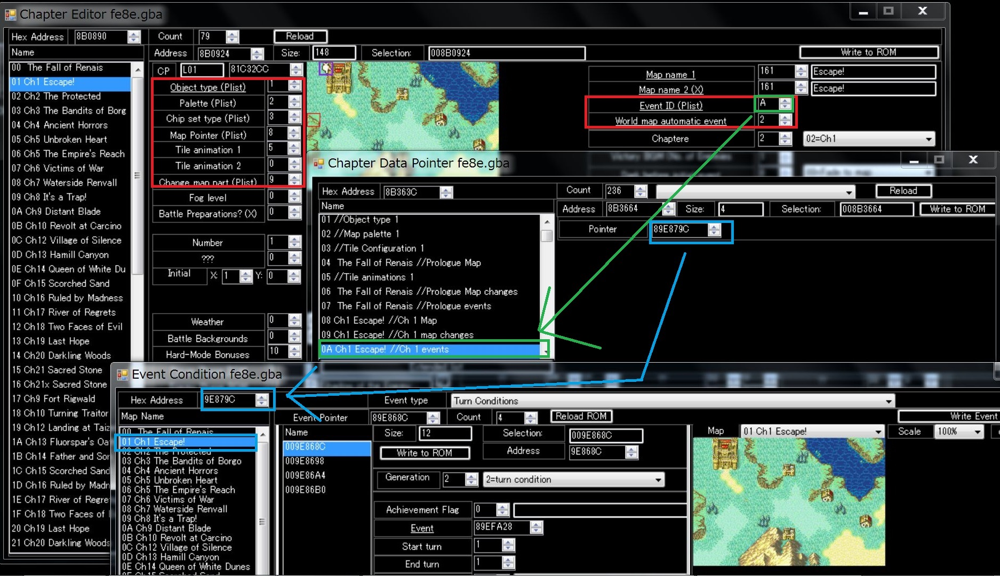
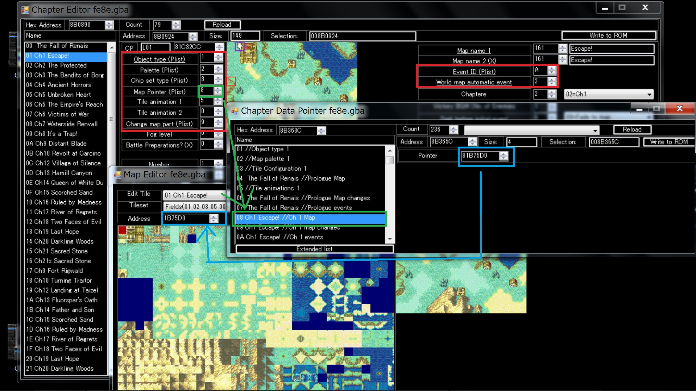
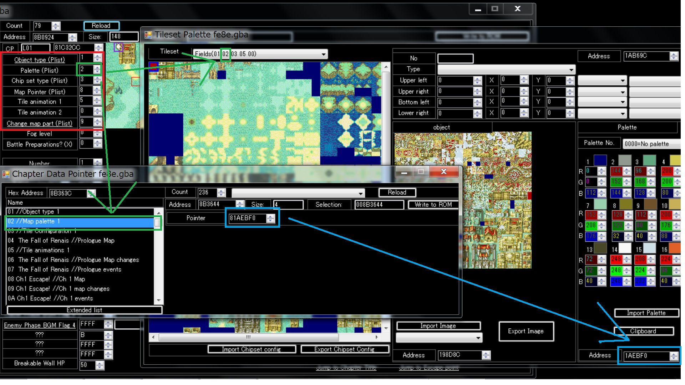
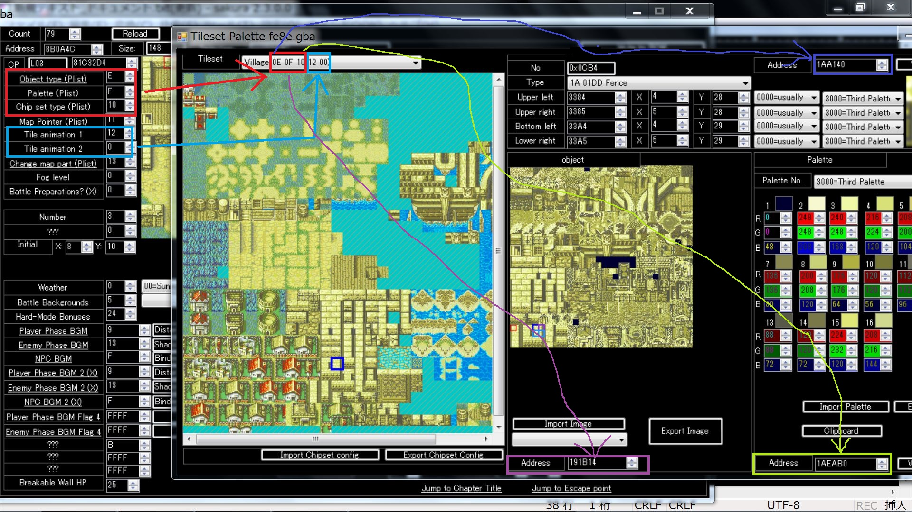

モルダとヴァネッサは、フレリア城にいます。
マップID 0x38 フレリア城です。
彼らのユニット配置は 0x908958 です。
彼らを仲間にする過程のイベントを、思い出してください。
エイリークは、フレリア城に逃げます。
そして、フレリア王から、お金をもらい、モルダとヴァネッサが仲間に加わります。
つまり、フレリア城に彼らはいるんです。
フレリア城は、マップID 0x38 です。草原の1タイルしかないマップです。
ここの開始イベントは特殊な作りになっています。
(なぜなら、新たなる旅立ちでもう一度訪れるためです。)
FEBuilderGBAを利用している場合2つの方法があります。
“フリーマップから入らないとフリーズする制約を消す” パッチを入れる。
または、
詳細メニューの、右下の方にあるマップ読み込み時処理で、該当マップの制約を外してください。
これは、ワールドマップに出てくる魔物とのフリーバトル(world map skirmishes)が関係しているという噂です。
NIMAP音源を利用してください。
FEの音源はmidiと構造が違います。そのため、midiを鳴らすには、midiの楽器順番に楽器を並び替えたNIMAPを利用すると便利です。
NIMAPはFEBuilderGBAから簡単に導入できます。
簡単にやりたい場合、FEBuilderGBAの ツール→減色ツール を利用してください。
ただ、機械的に変換するので、一部のグラデーションが飛んでしまうことが有ります。
詳細解説
GBAは 8*8ドットのタイルに画面を分割して処理しています。
GBAでは、1つのパレットで16色保持できます。このパレットが16個の束になっています。
GBAでは、8*8ドットのタイル単位で、利用するパレットを切り替えることができます。
よって、利用したいタイルで利用したい色が入っているパレットを指定することができます。
また、容量を少なくするために、同一タイルは一つのタイルにまとめることもできます。
このように、どのタイルがどのパレットを使って、どう表示するかを定義しているデータをTSAデータといいます。
もし、ツールを使わずに手でデータを作る場合は、まずは、16色だけを使って画像を作ります。
そして、特別に色を出したいタイルだけを別パレットを使って色をつけてください。
BGとCGでは8パレット利用することが出来ます。
両方のコミニティで使われている用語の違いをまとめたものが有ります。
あとは、google翻訳でなんとかしてください。
私たちは、同じFEというゲームで遊んでいるんだから、忍耐と想像力があれば、なんとかなりますよ。
FEで学ぶ英語
FE8じゃないけど、よくありそうなので書きます。
FE7烈火の剣のチュートリアルを消す方法は、2つあります。
1.チュートリアル自体を除去する方法
FEBuilderGBAのメニュー ツール → patchにある “チュートリアルを無効にする(Tutorial Disabler)” を使ってください。
チュートリアルイベントをnullで埋め、チュートリアル判定if文を消します。
これでチュートリアルはすべて消滅します。
2.難易度をハードで固定する
FEBuilderGBAのメニュー ツール → patchにある
“難易度固定_ノーマルを選択してもハードモード”
とか、
“難易度固定”
などを利用して、チュートリアル自体が無効になるハードモードを強制的に選択させます。
どちらか好きな方を使ってください。
@0018を使用したテキストを
背景つき会話で使用するとダメみたいなので大人しく背景無会話で使用してください
例:4005020000000000400503008D090000400A00004804A608//[背景:0x0][TEXT:0x98D
4005070001000000//SVAL[Memory_Slot:0x7][Value_to_store:0x1]
これだとダメなので
201B8D09201D0000 [XXXX:TEXT:会話テキスト]背景無会話表示(LOW)
4005070001000000//SVAL[Memory_Slot:0x7][Value_to_store:0x1]
こういう感じにすればOKです
GBAFEのマップ関係の値は、ポインタリストで管理されています。
マップ設定では、そのリストの何番目の値を見るかという指定をします。
こちらの画像をご覧ください。




なお、この値は、byte値なので、255を超えることができません。
基本は、text形式で移植します。
こちらのほうが、アニメーションの編集をしやすいからです。
それで動作しない場合は、BIN形式を利用します。
OAMシートに依存するアニメーションを移植できます。
ただし、魔法使いはマントコマンドがあるのでそれでも動作しないので諦めるか、
マントコマンドをC01 Hackを利用して自作する必要があります。
{kind=link}
{kind=link}
{kind=link}
{kind=link}